Sketches of Octagon Studio · pp. 44–55
“Nobody ever tells you that emptiness weighs the most.”
Scroll slowly
Time ofDestruction
I draw entirely to find out what I'm thinking, what I'm looking at, what I see and what it means. What I want and what I fear. The things people don't say.
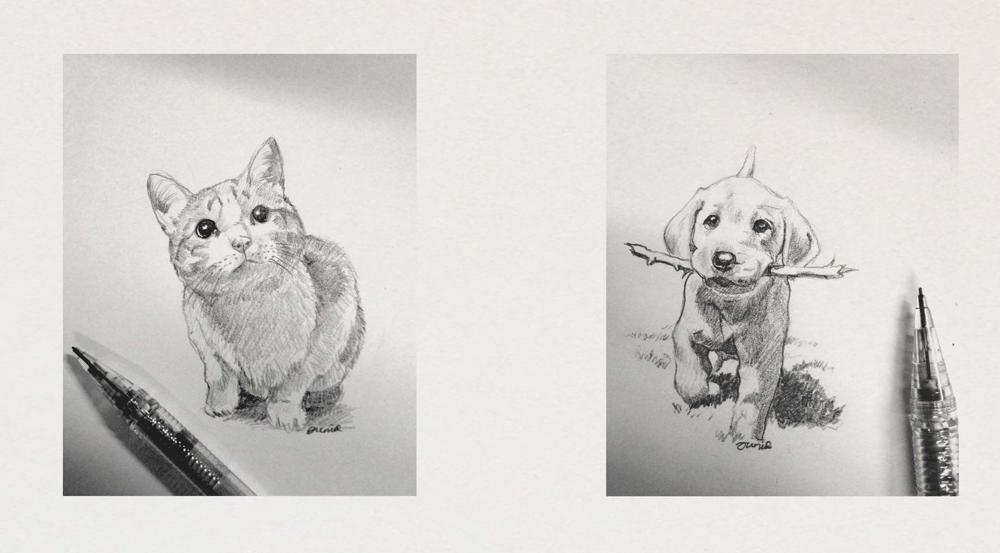
p. 45“I crave adventure, attention, and you.”
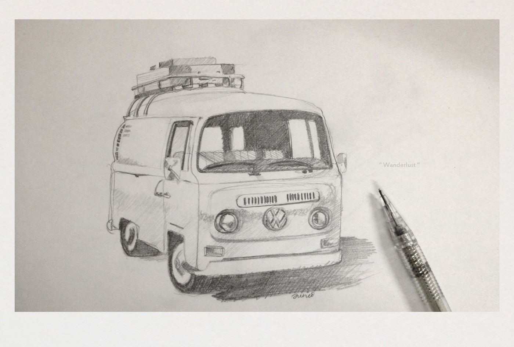
p. 46“Wanderlust.”
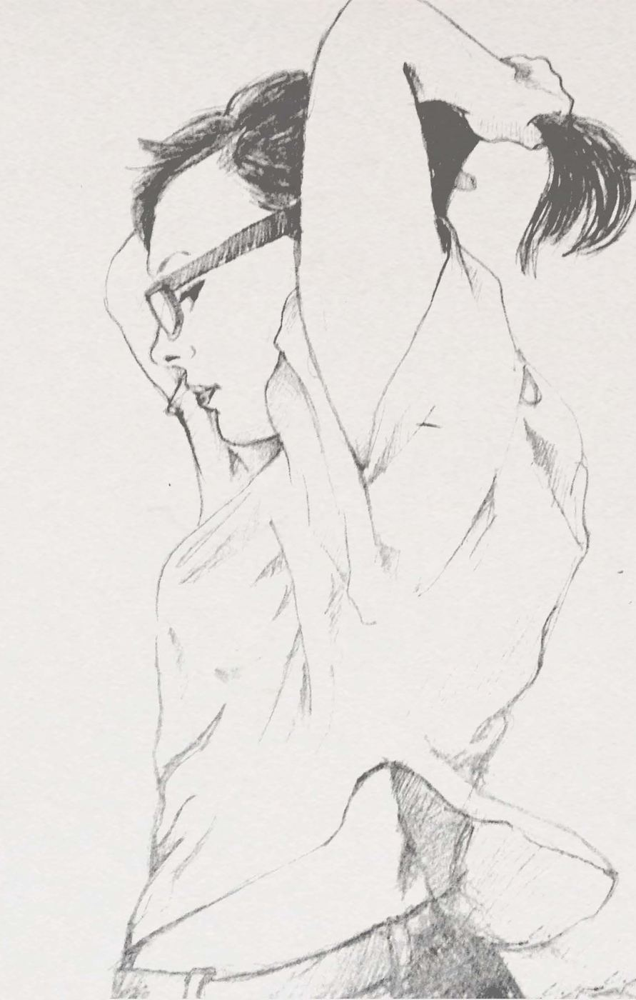
p. 47“What a terrible mistake to let go of something wonderful for something real.”
Miranda July, No One Belongs Here More Than You
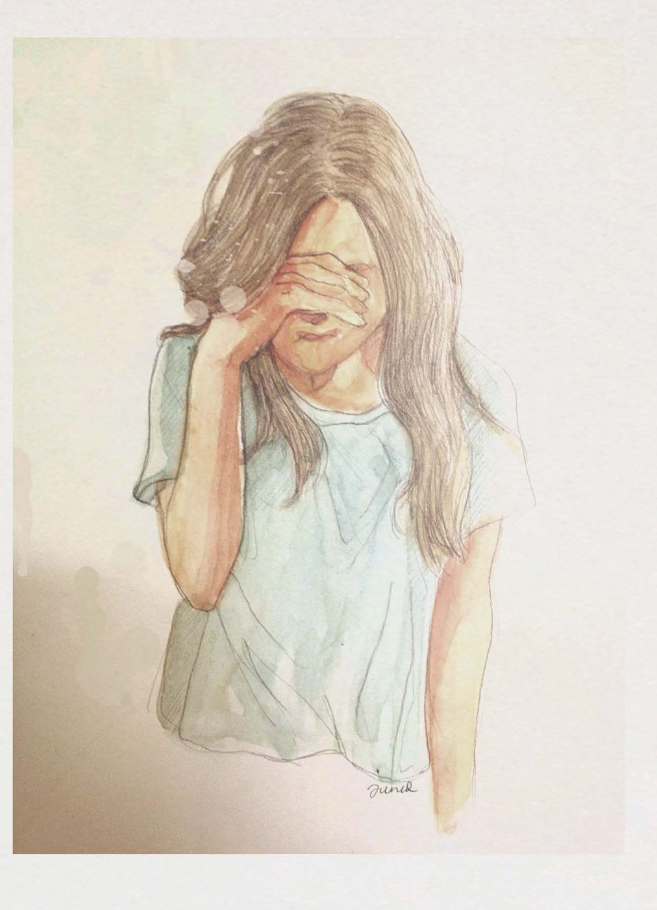
p. 48“You'll likely end up disappointed if you think people will care for you the way you care for them.
Not everybody has your heart.”
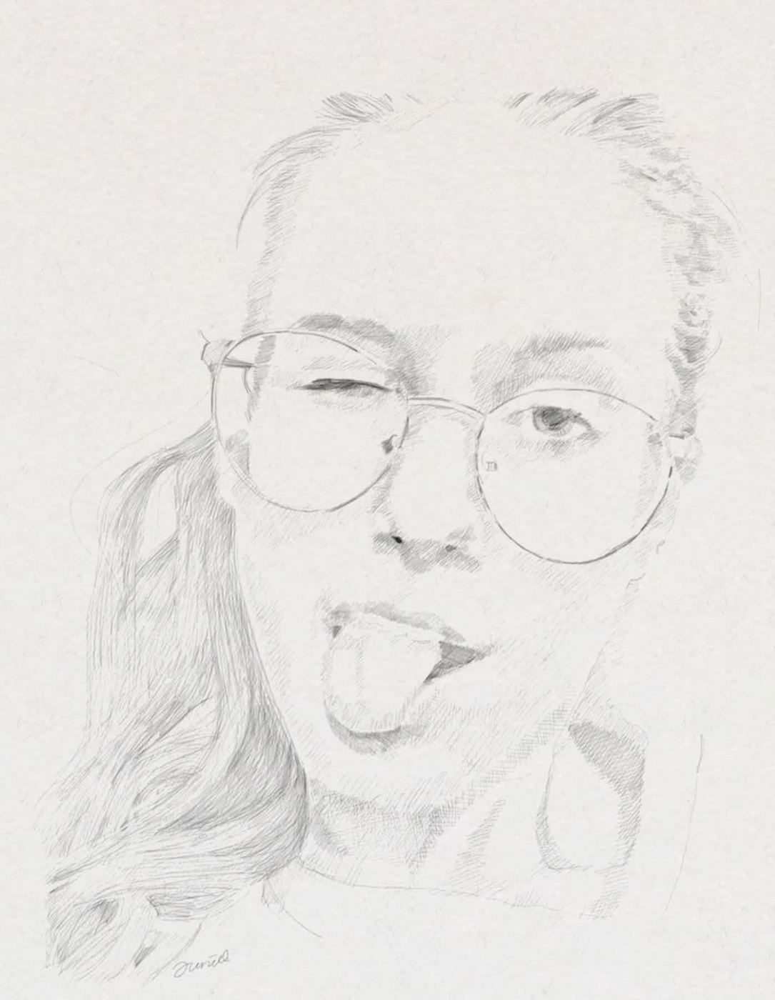
p. 49“Sexy doesn't impress me.. smart impresses me.. strength of character impresses me..
But most of all, I'm impressed by kindness.. when I see that in someone, it fills me with admiration.”
Lisa Unger, Four Thrillers
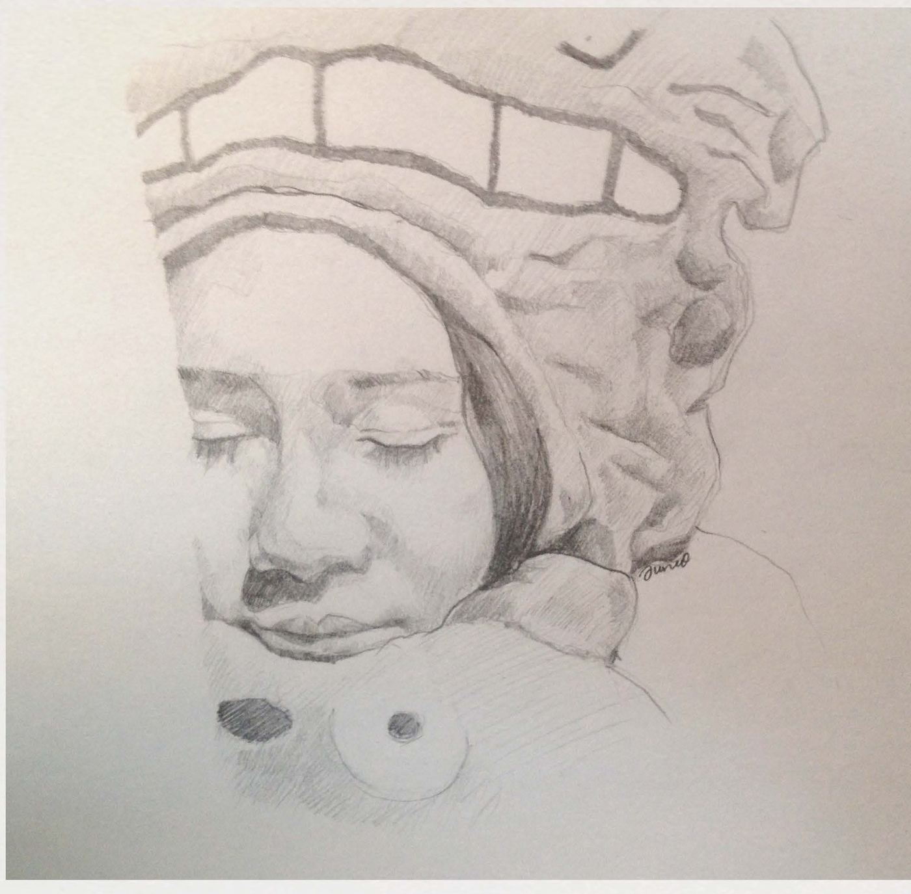
p. 50“Don't forget to love her.
The little girl you used to be.
Perhaps she lies within you.
Untucked. Sleeping peacefully.”
“Nurture.” by Kiana Llanos
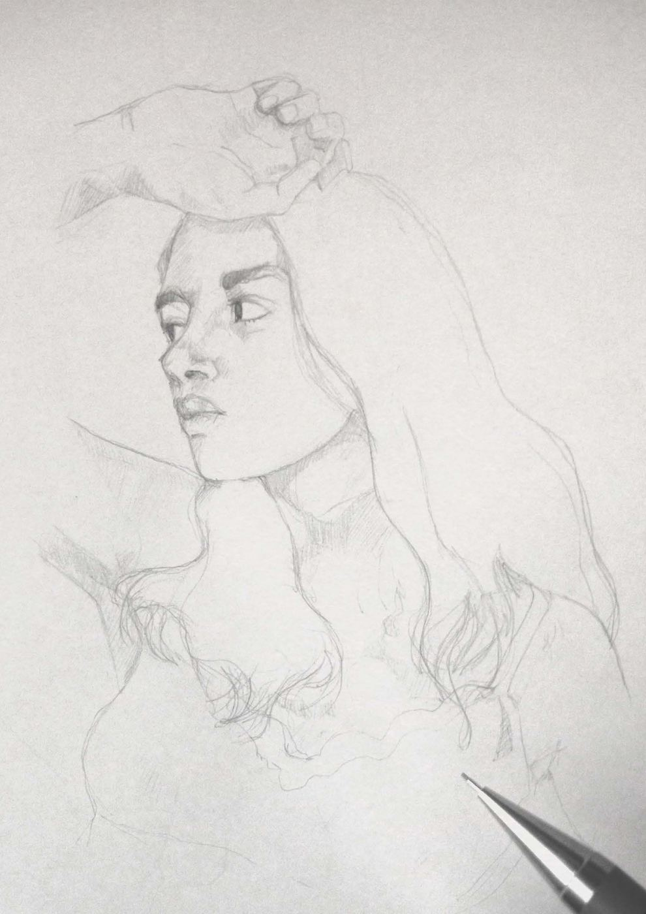
p. 51“She had her eyes on the sky
~ but I had my eyes on my world.”
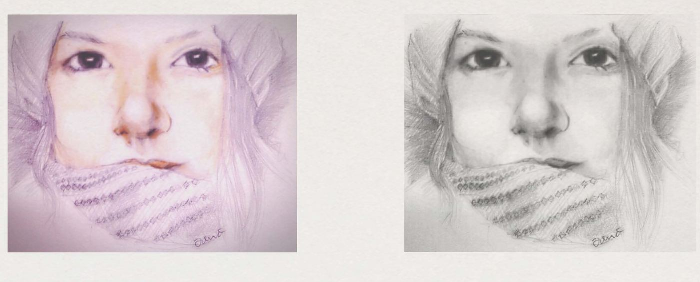
p. 52“What is that you express in your eyes?
It seems to me more than all the print I have read in my life.”
Walt Whitman
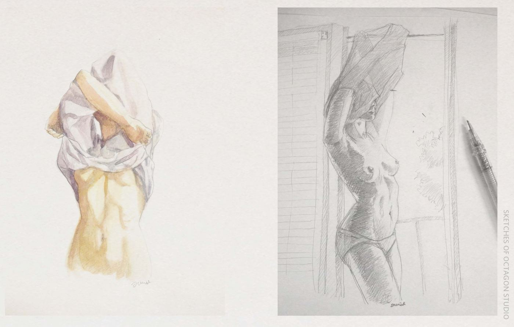
p. 53“You have this uncanny ability to make my heart sing and panties wet, she said, I find it all pleasantly disturbing.”
Michael Faudet
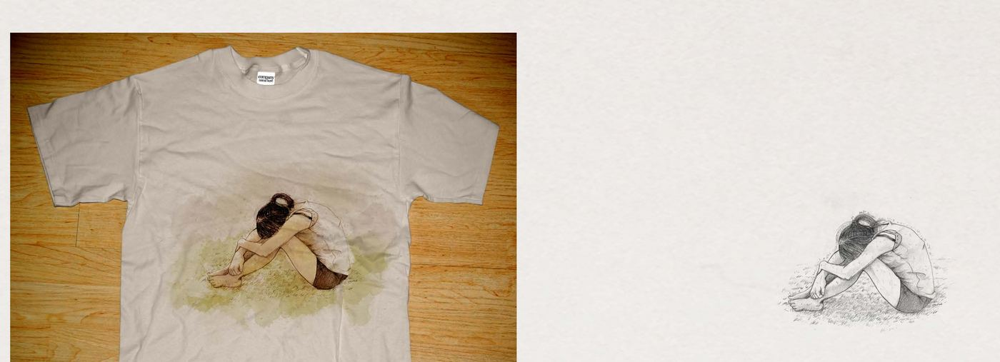
p. 54“Suddenly she realized that what she was regretting was not the lost past but the lost future,
not what had not been but what would never be.”
F. Scott Fitzgerald
“After all, you only see what I choose to show you.”
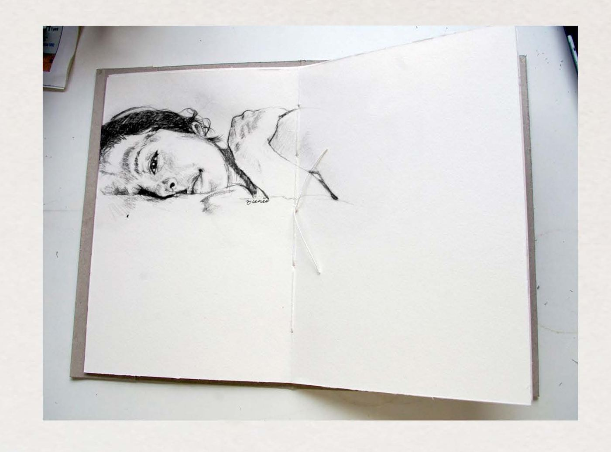